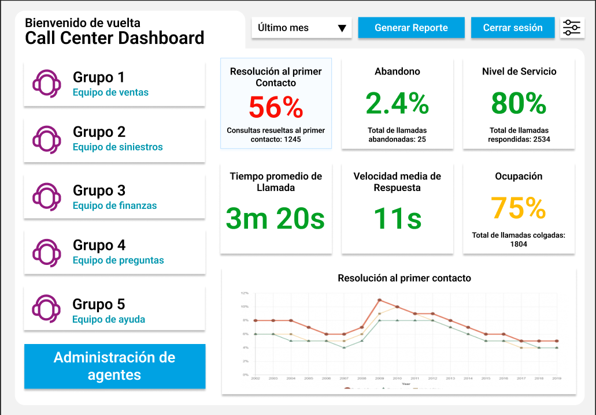

Qualicenter
System, in collaboration with Amazon US, to enhance customer service at Quálitas, a leading Mexican insurance company. This tool enables call center supervisors to monitor team performance in real-time and identify areas for improvement, optimizing operations and providing a better customer satisfaction. This system makes use of AWS services and Amazon Connect for the real-time data analysis.